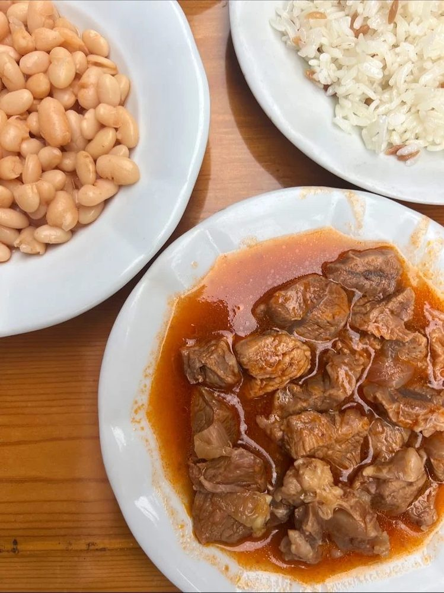
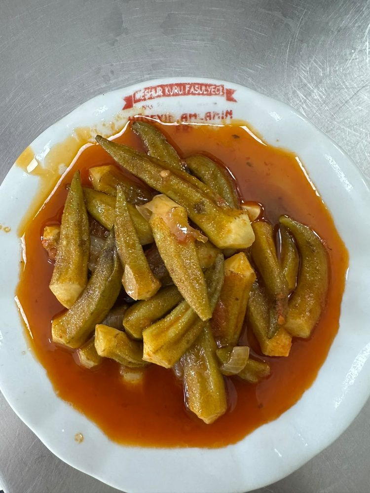
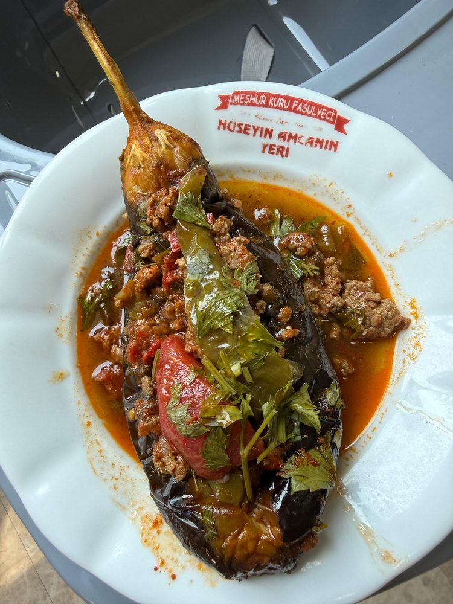
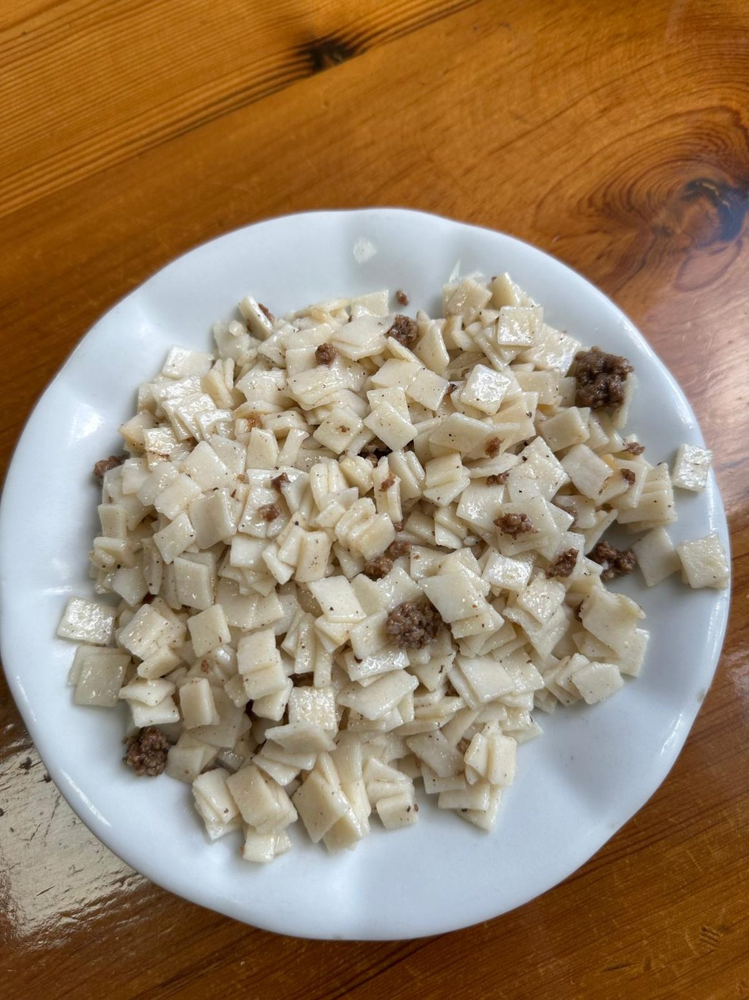

Bodrum'da ev yemekleri ve esnaf lokantası
Tencere yemeği sabah pişer, öğlen yenir ve akşama kalmaz. Ortakent'teki lokantamızda 1955'ten beri aynı düzen sürüyor.

Esnaf lokantası ne demek
Esnaf lokantasında menü kısa olur, çünkü her şey o sabah pişer. Vitrine ne konduysa o gün yenecek yemek odur ve bittiğinde tencere yeniden kurulmaz. Fiyat da bellidir, sürprizi yoktur.
Bizdeki düzen de tam olarak böyle. Sabah dokuzda açarız, yemekler bitince kapatırız. Öğlen saatleri hem en yoğun hem en taze zamandır; öğleden sonra gelen bazı tencereleri boş bulabilir.

Haftanın tencere programı
Beş yemek tencereden hiç eksilmez; yanlarına gün gün başkaları girer.
- Her gün: kuru fasulye, tas kebabı, tavuk sote, pilav, bulgur pilavı.
- Pazartesi: taze fasulye, lokum pilavı.
- Salı: bezelyeli köfte.
- Çarşamba: patlıcan musakka, lokum pilavı.
- Perşembe: bamya.
- Cuma: imam bayıldı.
- Cumartesi ve pazar: sabit program tutmuyoruz; o gün ne piştiğini sorabilirsiniz.
Karnıyarık, salçalı köfte, portakal sulu kereviz, pırasa ve kızartma da mevsimine göre tencereye giriyor. Çorba tarafında mercimek ve tavuk suyu her gün taze pişer.




Yemekten sonra ikram
- Salı ve çarşamba: sütlaç.
- Perşembe ve cuma, yaz aylarında: soğuk karpuz.
- Perşembe ve cuma, kış aylarında: kaşık helvası.
İkramlar hesaba yazılmaz. Ev turşumuzu da sofraya biz koyuyoruz; biberi de lahanası da burada kurulur ve isteyene kavanozla veriyoruz.

Fiyatlar açıkta
Neden "Bodrum'un en iyi lokantası" deniyor?
Bu cümleyi biz kurmuyoruz; elimizdeki kayıt aşağıda duruyor.
Bodrum'da ev yemeği ve kaliteli bir kuru fasulye yemek isteyen herkese gönül rahatlığıyla tavsiye ederim. Tekrar geleceğiz.Sinan Sezgin Google Haritalar yorumu
Kurucumuzla Anadolu Ajansı röportaj yaptı; haber GZT Jurnalist ve Bodrum Gündem'de de yayımlandı. Tripadvisor kaydımız açık.
Herhangi bir sıralama iddiasında bulunmuyoruz. Yapabileceğimiz tek şey kaydı önünüze koymak: yetmiş yıldır aynı mutfak, herkese açık yorumlar ve o sabah pişmiş bir tencere.
Adres, saat ve iletişim
📍Adres & Saatler
Meşhur Kuru Fasulyeci Hüseyin Amca'nın Yeri
Müskebi Mahallesi, Cumhuriyet Caddesi No:110
Ortakent — Belediye binası yanı
48400 Bodrum / Muğla
Sabah 09.00'da açılır, yemekler bitince kapanır.
Öğlen saatleri en yoğun ve en taze zamandır.
💬Sipariş & Bilgi
Günün yemekleri, paket servis ve rezervasyon için WhatsApp'tan yazabilirsiniz:
+90 507 650 28 33Sabit hat: 0252 358 21 29
WhatsApp'tan YazBize en çok sorulanlar
- Esnaf lokantası ne demek?
- Menüsü kısa, yemeği o sabah pişen, fiyatı belli lokanta demek. Vitrine ne konduysa o gün yenecek yemek odur; bittiğinde tencere yeniden kurulmaz.
- Bugün hangi yemekler var?
- Kuru fasulye, tas kebabı, tavuk sote, pilav ve bulgur pilavı hiç eksilmez. Günün ek tencerelerini WhatsApp'tan sorabilirsiniz: +90 507 650 28 33.
- Vejetaryen ve vegan seçenek var mı?
- Kuru fasulye ve imam bayıldıda et parçası yok. Katı vejetaryen ya da vegan besleniyorsanız et suyunu gelmeden WhatsApp'tan teyit edin. Cacık, yoğurt ve ev turşusunda et yok.
- Yemekten sonra ikram var mı?
- Salı ve çarşamba sütlaç ikram ediyoruz. Perşembe ve cuma yaz aylarında karpuz, kış aylarında kaşık helvası veriyoruz. İkramlar hesaba yazılmaz.
- Fiyatlarınız ne durumda?
- Kuru fasulye 230 ₺, tas kebabı 700 ₺, pilav 110 ₺, mercimek çorbası 200 ₺. Listenin tamamı menü sayfamızda açık duruyor.
- Paket servis yapıyor musunuz?
- Paket ve rezervasyon için WhatsApp'tan yazmanız yeterli: +90 507 650 28 33.